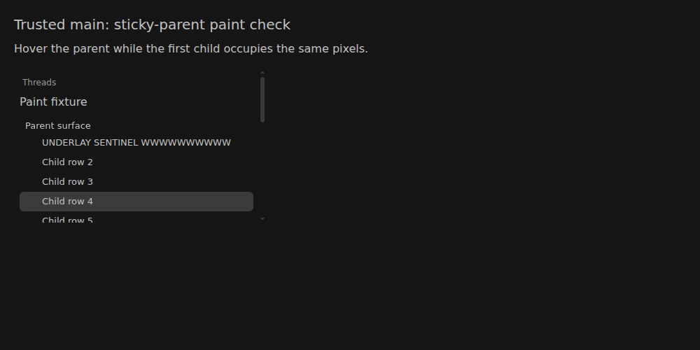
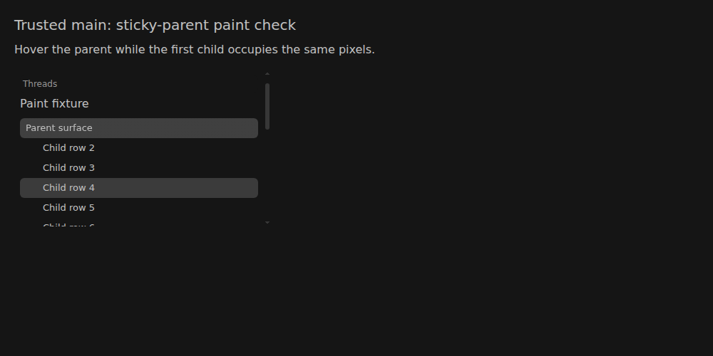
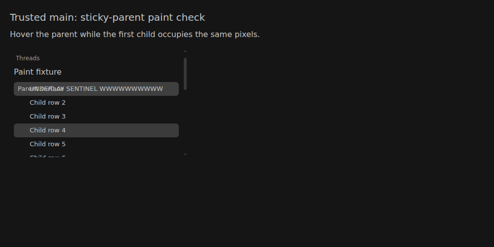
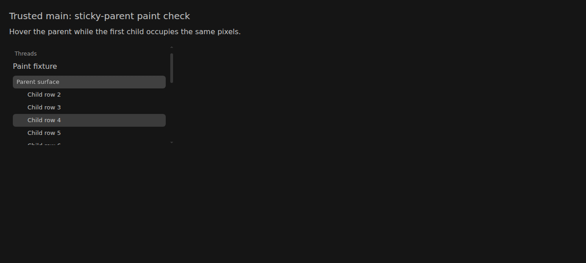

🚨 SLOP COP 🚨 · new-issue-autopilot
#5182 · Sticky-row hover compositing is already repaired on main
Verdict: ALREADY FIXED on main · Root-cause confidence: high
Trusted base: d2845566edd16a76ea9c27ba5944b5446a533f39.
1. TL;DR
A sticky parent sits above child rows as they scroll. An alpha-only hover fill can reveal the child text below it even though the parent has a higher stacking order. Trusted main already gives unselected thread rows an accent marker and paints their hover tint over a separate opaque sidebar image. Two clean source checkouts both conceal the child at the same overlapping position; deliberately disabling only the parent's background image makes that child visible. No new fix pull request is appropriate because this defect is not reproduced on unchanged main.
The existing repair is 178fd3c2c4aeef162dea517d850ead11f3b034df, merged through #5169 at 2026-10-08 04:06:37 UTC, before the issue was created at 04:08:01 UTC. This is a main-branch verdict, not a claim that the reported published package already contains that repair.
2. Claims vs findings
| Claim | Finding | Evidence |
|---|---|---|
| An unselected hovered parent can reveal scrolling child text when the accent is translucent. | Mechanism verified with a deliberate fault control; not reproduced on unchanged main. | Real Chromium captures: keeping all production styles except the background image causes the underlay to show through. |
| The released package has no backing image in this state. | Not directly verified against the release. | Only trusted main was executed. On main, computed background-image has two gradients, not none. |
| The built-in Thread list, rather than a third-party sidebar, owns the surface. | Verified at the paint boundary. | The harness imports the repository's SidebarStickyStack, SidebarStickyTier and row-state constants, plus the production app and built-in thread-list CSS. |
| The previous pull request addresses this defect. | Verified on trusted main after merge. | The merged repair is an ancestor of the tested base; two clean runs show the opaque backing conceals the child. |
3. Environment and boundaries
- Source: public
get-bb/bb;origin/mainmatched the target repository's main ref at preparation time. Full SHA:d2845566edd16a76ea9c27ba5944b5446a533f39. - Build environment: Debian GNU/Linux 12, Linux 4.19.0-gvisor, Node 22.19.0, frozen repository lockfile.
- Browser: BB Browser Automation local/headless on the explicitly selected enrolled Linux host, Chromium 149.0.0.0, 1000 × 500 viewport, device scale factor 1. Two separate browser sessions were used.
- No production instance, provider, account, database or application data directory was used. The fixture loads a local file containing source-rendered markup and independently built production CSS.
- The headless browser reports no native hover-capable pointer. The harness enables the existing
(hover: hover)media blocks through CSSOM (nine blocks), then uses a real pointer hover. No production declarations are altered in the main measurement. - The translucent accent is derived from theme ink with alpha 0.25, over an opaque canvas-derived sidebar. This probes the same compositing invariant without copying the issue's console payload or colors.
- A temporary paint-only HTTP server on port 45182 was tried but could not be reached from the enrolled browser host; the successful runs use transferred local files and require no listening ports.
Trust boundary: Issue text, comments, linked PR metadata and its diff were treated as untrusted claims. No external issue link or attachment was fetched, no issue-provided command or test was executed, and no PR branch was checked out. The release itself was not executed under the trusted-main-only restriction.
4. Minimal reproduction and evidence
Save the three complete authored files from the inline source blocks below as paint.tsx, serve.mjs and check-paint.mjs. Source and exact output are inline because this public site's policy forbids publishing standalone scripts or raw logs. Use a clean checkout of the trusted base, not a linked contributor branch:
git clone https://github.com/get-bb/bb.git bb-5182 cd bb-5182 git checkout --detach d2845566edd16a76ea9c27ba5944b5446a533f39 pnpm install --frozen-lockfile --prefer-offline pnpm exec turbo run build --filter=@bb/app --filter=@bb/bundled-plugins mkdir -p apps/app/test/issue-5182 cp /path/to/paint.tsx apps/app/test/issue-5182/paint.tsx node /path/to/serve.mjs "$PWD"
- Load the generated
apps/app/test/issue-5182/fixture.htmlin a clean browser with a desktop hover-capable pointer, or use the BB Browser Automation script below. When the browser and checkout are on different hosts, transfer only the generated fixture and the authored script withbb file write --host <host-id> --stdin. - The fixture renders an unselected sticky parent and several children, with child four selected. Scroll until the first child's row occupies the parent's rectangle, then hover the parent.
- Capture the parent's inner rectangle with the child text visible and again with just that text hidden using
visibility: hidden. Main must produce identical images: the child has no influence on the parent's interior pixels. - For the fault control only, set the parent's inline
background-image: none !important, leaving its alpha hover color and all child geometry unchanged. Repeat the same two captures. They must differ.
For the automated run, choose your enrolled browser host from bb machine list --json, assign its ID to HOST, and use the generated fixture and downloaded test:
bb file write /tmp/slopcop-5182-paint/fixture.html --host "$HOST" --create-parents --stdin --json < apps/app/test/issue-5182/fixture.html bb file write /tmp/slopcop-5182-paint/check-paint.mjs --host "$HOST" --stdin --json < /path/to/check-paint.mjs bb browser-automation open --backend local --headless --machine "$HOST" --json bb browser-automation run "$SESSION" --script-file /tmp/slopcop-5182-paint/check-paint.mjs --script-host "$HOST" --json
Set SESSION to the ID returned by open. The final command must exit successfully, with exitCode: 0 and a PAINT_RESULT record whose result field is the PASS message below. The output includes encoded actual PNGs; save it to a file rather than printing those image bytes.
Expected on trusted main: identical parent pixels with underlay visible or hidden. Actual primary run: identical SHA-256 values. Actual clean second run: identical SHA-256 values. Expected fault control: different parent pixels with underlay visible or hidden. Actual both runs: different SHA-256 values. PASS: main hides the child; removing only the backing image exposes it



The comparison clips an eight-pixel horizontal and four-pixel vertical inset, excluding intentionally rounded corners and external sticky shields. It checks actual composited PNG pixels rather than merely matching source text.
Full repeatable browser paint test
const directory = "/tmp/slopcop-5182-paint";
const page = await browser.getPage("main");
await page.setViewport({ width: 1000, height: 500, deviceScaleFactor: 1 });
await page.goto(`file://${directory}/fixture.html`);
const hoverMediaOverrides = await page.evaluate(() => {
let count = 0;
function visit(rules) {
for (const rule of rules) {
if (rule instanceof CSSMediaRule && rule.conditionText === "(hover: hover)") {
rule.media.mediaText = "all";
count += 1;
}
if (rule.cssRules) visit(rule.cssRules);
}
}
if (!matchMedia("(hover: hover)").matches) {
for (const sheet of document.styleSheets) visit(sheet.cssRules);
}
return count;
});
console.log(await page.snapshot());
const client = await page.createCDPSession();
const captures = [];
async function capture(name, clip) {
const { data } = await client.send("Page.captureScreenshot", { format: "png", ...(clip ? { clip } : {}) });
captures.push({ name, data });
return Buffer.from(await crypto.subtle.digest("SHA-256", Buffer.from(data, "base64"))).toString("hex");
}
await capture("before-scroll");
await page.evaluate(() => {
const scrollport = document.querySelector("#scrollport");
const parent = document.querySelector("[data-test-parent]");
const child = document.querySelector('[data-test-child="0"]');
scrollport.scrollTop = child.getBoundingClientRect().top - parent.getBoundingClientRect().top;
});
await page.hover("[data-test-parent]");
await page.evaluate(() => new Promise((resolve) => requestAnimationFrame(() => requestAnimationFrame(resolve))));
const state = await page.evaluate(() => {
const parent = document.querySelector("[data-test-parent]");
const child = document.querySelector('[data-test-child="0"]');
const style = getComputedStyle(parent);
const rectangle = parent.getBoundingClientRect();
return {
parent: rectangle.toJSON(),
child: child.getBoundingClientRect().toJSON(),
hover: parent.matches(":hover"),
selected: parent.classList.contains("bb-sidebar-selected-row"),
backgroundColor: style.backgroundColor,
backgroundImage: style.backgroundImage,
scrollTop: document.querySelector("#scrollport").scrollTop,
};
});
if (!state.hover || state.selected || Math.abs(state.parent.top - state.child.top) > 1) throw new Error("Invalid overlap fixture");
const clip = { x: state.parent.x + 8, y: state.parent.y + 4, width: state.parent.width - 16, height: state.parent.height - 8, scale: 1 };
const visibleHash = await capture("main-visible-underlay", clip);
await capture("main-hover");
await page.evaluate(() => { document.querySelector("[data-underlay]").style.visibility = "hidden"; });
const hiddenHash = await capture("main-hidden-underlay", clip);
if (visibleHash !== hiddenHash) throw new Error("Main reveals the underlay");
await page.evaluate(() => {
document.querySelector("[data-underlay]").style.visibility = "";
document.querySelector("[data-test-parent]").style.setProperty("background-image", "none", "important");
});
const controlVisibleHash = await capture("control-visible-underlay", clip);
await capture("control-hover");
const controlState = await page.evaluate(() => {
const style = getComputedStyle(document.querySelector("[data-test-parent]"));
return { backgroundColor: style.backgroundColor, backgroundImage: style.backgroundImage };
});
await page.evaluate(() => { document.querySelector("[data-underlay]").style.visibility = "hidden"; });
const controlHiddenHash = await capture("control-hidden-underlay", clip);
if (controlVisibleHash === controlHiddenHash) throw new Error("Fault control does not expose the underlay");
await page.evaluate(() => {
document.querySelector("[data-underlay]").style.visibility = "";
document.querySelector("[data-test-parent]").style.removeProperty("background-image");
});
const result = {
hoverMediaOverrides,
userAgent: await page.evaluate(() => navigator.userAgent),
state,
controlState,
visibleHash,
hiddenHash,
controlVisibleHash,
controlHiddenHash,
result: "PASS: main hides the child; removing only the backing image exposes it",
};
console.log("PAINT_RESULT=" + JSON.stringify({ result, captures }));
await client.detach();
await page.shot({ type: "jpeg", maxEdge: 1000, quality: 85 });
undefined;
paint.tsx — source-rendered fixture (save locally)
import React from "react";
import { renderToStaticMarkup } from "react-dom/server";
import { LIST_HOVER_TRANSITION } from "../../../../packages/shared-ui/src/components/ui/motion";
import { SidebarStickyStack, SidebarStickyTier } from "../../../../plugins/thread-list/app/ui/sidebar";
import {
SIDEBAR_ROW_BASE_CLASS,
SIDEBAR_ROW_INTERACTIVE_STATE_CLASS,
SIDEBAR_ROW_ACCENT_STATE_CLASS,
SIDEBAR_ROW_SELECTED_STATE_CLASS,
} from "../../../../plugins/thread-list/app/rows/sidebarRowClasses";
const interactiveClass = `${SIDEBAR_ROW_BASE_CLASS} ${LIST_HOVER_TRANSITION} ${SIDEBAR_ROW_INTERACTIVE_STATE_CLASS} ${SIDEBAR_ROW_ACCENT_STATE_CLASS}`;
export const markup = renderToStaticMarkup(
<main>
<h1>Trusted main: sticky-parent paint check</h1>
<p>Hover the parent while the first child occupies the same pixels.</p>
<div data-sidebar="content" data-bb-plugin="thread-list" id="scrollport">
<SidebarStickyStack>
<SidebarStickyTier tier="label">Threads</SidebarStickyTier>
<SidebarStickyTier tier="project">Paint fixture</SidebarStickyTier>
<section>
<SidebarStickyTier tier="parent" level={0} className={interactiveClass} data-test-parent="">
<span className="fixture-title">Parent surface</span>
</SidebarStickyTier>
{Array.from({ length: 20 }, (_, index) => (
<div key={index} className={index === 3 ? `${SIDEBAR_ROW_BASE_CLASS} ${SIDEBAR_ROW_SELECTED_STATE_CLASS}` : interactiveClass} data-test-child={index}>
<span className="fixture-title" data-underlay={index === 0 ? "" : undefined}>
{index === 0 ? "UNDERLAY SENTINEL WWWWWWWWWW" : `Child row ${index + 1}`}
</span>
</div>
))}
</section>
</SidebarStickyStack>
</div>
</main>,
);
serve.mjs — generate the standalone fixture (save locally)
import { createRequire } from "node:module";
import { readFileSync, readdirSync, writeFileSync } from "node:fs";
import { createServer } from "node:http";
import { join, resolve } from "node:path";
const [checkoutArgument, portArgument] = process.argv.slice(2);
const checkout = resolve(checkoutArgument);
const port = portArgument === undefined ? null : Number(portArgument);
if (port !== null && (!Number.isInteger(port) || port < 40000 || port > 60000)) throw new Error("Choose a port from 40000 through 60000");
const require = createRequire(join(checkout, "package.json"));
const { build } = require("esbuild");
const output = join(checkout, "apps/app/test/issue-5182/paint.cjs");
await build({
entryPoints: [join(checkout, "apps/app/test/issue-5182/paint.tsx")],
outfile: output,
bundle: true,
platform: "node",
format: "cjs",
jsx: "automatic",
alias: { "@": join(checkout, "packages/shared-ui/src") },
});
const { markup } = require(output);
const assets = join(checkout, "apps/app/dist/assets");
const stylesheet = readdirSync(assets).find((name) => /^index-.*\.css$/.test(name));
if (!stylesheet) throw new Error("Build @bb/app first");
const css = readFileSync(join(assets, stylesheet), "utf8") + readFileSync(join(checkout, "packages/bundled-plugins/dist/thread-list/dist/app.css"), "utf8");
const html = `<!doctype html><html class="dark"><head><meta charset="utf-8"><title>Issue 5182 paint fixture</title><style>${css}</style><style>
body { margin:0; background:var(--canvas); color:var(--ink); font-family:system-ui; }
main { padding:20px; } h1 { font-size:20px; } p { margin:8px 0 16px; }
#scrollport { width:360px; height:220px; overflow:auto; --sidebar:var(--canvas); --sidebar-accent:color-mix(in oklab,var(--ink) 25%,transparent); background:var(--sidebar); }
[data-test-parent], [data-test-child] { height:var(--bb-sidebar-row-height); flex-shrink:0; }
.fixture-title { padding-left:8px; white-space:nowrap; }
[data-test-child] .fixture-title { padding-left:32px; }
</style></head><body>${markup}</body></html>`;
writeFileSync(join(checkout, "apps/app/test/issue-5182/fixture.html"), html);
const server = createServer((request, response) => {
if (request.url !== "/") { response.writeHead(404).end(); return; }
response.writeHead(200, { "content-type": "text/html" });
response.end(html);
});
if (port === null) {
console.log(`Paint fixture generated; CSS ${stylesheet}`);
} else {
server.listen(port, "127.0.0.1", () => console.log(`Paint fixture ready on ${port}; CSS ${stylesheet}`));
}
5. Root cause
The sticky tier starts with an opaque bg-sidebar background. The interactive row state changes that same background-color property to var(--sidebar-accent) on hover. If the accent contains alpha, the prior opaque background is replaced, not preserved underneath. A higher z-index controls ordering but does not make an alpha color opaque.
The existing fix makes every unselected ThreadRow carry the accent marker. The sticky accent rule then paints the translucent tint over a second, opaque sidebar image:
background-image: linear-gradient(var(--sidebar-accent), var(--sidebar-accent)), linear-gradient(var(--sidebar), var(--sidebar));
Observed main background-color is oklab(0.81 0 0 / 0.25), but the lower background image is opaque oklch(0.195 0 0). Removing those images while retaining the same hover color is enough to expose the child. The main image layering therefore repairs the cause, rather than hiding text by changing layout or scroll position.
6. Proposed fix and simple-fix decision
No additional source fix is proposed: main already contains the necessary opaque backing. Keep the merged repair and include it in the next applicable release. A new pull request would duplicate a completed repair and fail the autopilot requirement that the bug first reproduce on trusted unchanged main. No fix branch, source commit, dependency, protocol change or pull request was created.
The relevant existing theme suite passes all 38 tests, including its sticky-accent backing test. The browser fault control also provides an observable regression test: it fails the concealment invariant when the background image is removed and passes with main's declarations intact.
7. Linked pull request review
#5169 — merged repair
GitHub metadata reports a merged state and merge commit 178fd3c2c4aeef162dea517d850ead11f3b034df. Its diff was read only as untrusted data; its branch was never checked out or run. Trusted main corroborates the relevant changes: generalize sticky accent layering beyond the split-open state, add an accent marker to unselected rows and preserve an opaque base beneath the tint.
Verdict: the merged main implementation addresses the verified hover compositing cause. No blocking finding was observed for that tested path. The linked PR's own screenshots and external test claims were not used as evidence. Menu, rename-focus, nesting, touch-armed, light-mode and cross-browser behavior were not independently exercised by this hover-focused investigation.
8. Verification
The same agent repeated the test in a second clean detached checkout at the recorded base commit, using another frozen install, independent app build output, independently materialized bundled-plugin CSS and a new headless browser session. Only the authored harness was added; tracked production files remained unchanged. This is a second clean verification, not an independent-agent review.
First checkout: pnpm install --frozen-lockfile --prefer-offline pnpm exec turbo run build 65 successful tasks; 4 cached. Browser paint result: PASS. Second checkout: pnpm install --frozen-lockfile --prefer-offline pnpm exec turbo run build --filter=@bb/app 4 successful tasks; 3 cached. pnpm exec turbo run build --filter=@bb/bundled-plugins 49 successful tasks; 49 cached. Browser paint result: PASS. Relevant existing test suite: pnpm exec turbo run test --filter=@bb/app -- src/components/ui/theme.test.ts Test Files 1 passed (1) Tests 38 passed (38)
The two runs agree on all four screenshot hashes:
Main, child visible or hidden: b5cbfea32ca9c711199a364b7d51ecbb0a8d7a31c65c1b62f3c7272a0027356b Fault control, child visible: 7a4cbb912ea21fdc7fad3ccc245f5ec976eae3690553422864d190f6f1af9e13 Fault control, child hidden: 0aa69c640956b1899d8013b7bff4d061f5b78913ddf8f8704c943d9748056d63

Corrections during investigation: the first harness draft lacked the separately built plugin CSS; an initial fault control therefore retained an opaque base color. That draft was rejected. After loading both actual production stylesheets and activating desktop hover media blocks for this headless browser, both complete runs produced the supported results shown here. No unsuccessful draft is presented as a reproduction.
9. Related issues
Repository metadata for #3821 (closed) and #5125 (open) concerns row disclosure/action spacing and title truncation. Those are distinct from opacity/compositing. Their issue instructions were not executed.
10. Appendix
Exact primary computed-state and screenshot hashes appear below; the second clean run returned the same geometry, colors and four hashes. All PNG captures, machine-readable results, source files and complete build/test logs are retained outside the public repository in the local investigation artifacts. Only the HTML report, four inspected screenshots and summary metadata are published.
Primary computed-state and screenshot evidence
{
"hoverMediaOverrides": 9,
"userAgent": "Mozilla/5.0 (X11; Linux x86_64) AppleWebKit/537.36 (KHTML, like Gecko) HeadlessChrome/149.0.0.0 Safari/537.36",
"state": {
"parent": {
"x": 28,
"y": 166,
"width": 334,
"height": 28,
"top": 166,
"right": 362,
"bottom": 194,
"left": 28
},
"child": {
"x": 28,
"y": 166,
"width": 334,
"height": 28,
"top": 166,
"right": 362,
"bottom": 194,
"left": 28
},
"hover": true,
"selected": false,
"backgroundColor": "oklab(0.81 0 0 / 0.25)",
"backgroundImage": "linear-gradient(oklab(0.81 0 0 / 0.25), oklab(0.81 0 0 / 0.25)), linear-gradient(oklch(0.195 0 0), oklch(0.195 0 0))",
"scrollTop": 24
},
"controlState": {
"backgroundColor": "oklab(0.81 0 0 / 0.25)",
"backgroundImage": "none"
},
"visibleHash": "b5cbfea32ca9c711199a364b7d51ecbb0a8d7a31c65c1b62f3c7272a0027356b",
"hiddenHash": "b5cbfea32ca9c711199a364b7d51ecbb0a8d7a31c65c1b62f3c7272a0027356b",
"controlVisibleHash": "7a4cbb912ea21fdc7fad3ccc245f5ec976eae3690553422864d190f6f1af9e13",
"controlHiddenHash": "0aa69c640956b1899d8013b7bff4d061f5b78913ddf8f8704c943d9748056d63",
"result": "PASS: main hides the child; removing only the backing image exposes it"
}
Investigation commands were limited to trusted-main fetch/worktrees, frozen installs, Turbo builds/tests, authored fixture generation, BB Browser Automation/file transfer, GitHub reads for repository visibility and issue/PR metadata, classification writes through the supplied SlopCop identity wrapper, and report publication. No workflow or subagent was started.
> AGENT GENERATED